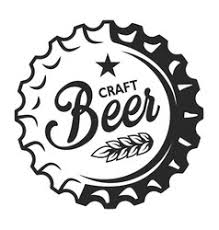

The Beer Station
Purveyors of fine Ale since 2021
Opening hrs Monday-Sunday: 13:30-22:30
Purveyors of fine Ale since 2021
Opening hrs Monday-Sunday: 13:30-22:30

This Belgian beer is citrussy and yeasty, earthy with some mild hops with notes of orange peel,candied lemon and a hint of caramilsed sugar .Its USP is surely the hopcone that greets the drinker frothing from the bottle. A very welcome addition to our selection and at €4:50.

Pours a deep ruby black with a lasting foamy white head. Aromas of old apple, jenever, wet hay, lime and lychess. The taste is medium fruity sweet with notes of old apple & apricot followed by a light grainy bitterness of oats and wet hay. It doesn't come cheap at €14 per glass what it makes up on price it delivers on quality.

Duchesse de Bourgogne boasts a gentle tartness, flavors of ripe fruit,and an overal vinous quality making it a wonderfully complex drinking experience. The barrel aging process impart flavors of wood and vanilla that give the beer an overall sense of structure. Barrel aging also prevents the fruit flavors from dominating the beer. What helps make this beer is that with all of uchesse de Bourgogne’s vinous complexity, it’s remarkably accessible. Which is to say that if you’ve never had a Flanders Red Ale before, this would be an excellent example to cut your teeth on. A 33ml bottle of this unique rtasr sensation costs €5:40.

It pours a transparent pale-yellow hue with a dense head that releases mild biscuit aromas balanced with bittering hops and a light crispness. This lager is light and refreshing, but not without fleeting complexities almost indecipherable amid extraordinary balance. It is neither too sweet nor too bitter, with delicate flavors of lemongrass, floral hops, and even slightly peppery notes that quickly dissipate as the 5.1 percent ABV liquid refreshes the back of the palate. “Prost! to the Germans for what may be the world’s perfect lager.
Colour wise little red reflections, but overall a classic malty brown transparent color matching more with a strong malted keller beer than a classic german dark beer. tastewise it starts thru with a overall comfy feel and at first some pregnat popcorn aromas. then it flushes down with delicious malty sweetness and slight bitterness, and overall i have nothing to say more than its a balanced classic dark beer with good quality and good to drink in fall and winter months.olourwise little red reflections, but overall a classic malty brown transparent color matching more with a strong malted keller beer than a classic german dark beer. tastewise it starts thru with a overall comfy feel and at first some pregnat popcorn aromas. then it flushes down with delicious malty sweetness and slight bitterness, and overall i have nothing to say more than its a balanced classic dark beer with good quality and good to drink in fall and winter months.

Cloudy and deep golden in colour, its bubbling carbonation give off a huge pillowy white head that leaves behind thick rings of lace. Classic aromas of bananas, cloves,bubblegum and a malted sweetness are reflected in the flavour. Malty and yeasty, an almost imperceptible hop bitterness and a dry finish provide a refreshing contrast that is perfect for the style. You’d want to drink this beer all day.